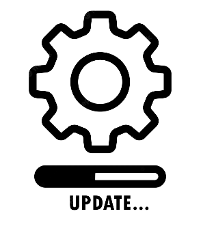

const projectsInfo = {"projectHead":"About the projects I work on",
"projectText":"I have worked on a number of different projects both comercially for my employers and personally as
passion projects.",
"workProjects":"Work Projects",
"wrkProjSumm":"This is a summary of a number of corporate programs I worked on.",
"intraHead":"Intranet Creation",
"intraTxt1":"As part of my work at Full Circle Software (FCS)(See Work Experience for more details) I worked with
the company's founder to create training documentation and guides for staff development and training.
In this project I worked exclusively remotely, working independantly to create detailed and thourough
step-by-step guides and in-depth documentation for use by all members of staff, including management.",
"intraTxt2":"This Project gave me skills in the following areas:",
"intraLi1":"Working independantly helped me to improve my ability to work within given parameters to achieve
goals without instruction.",
"intraLi2":"Creating documentation for projects in a simple, quick and easy-to-read way that made it simple
for users to find the required information.",
"intraLi3":"Helped me with developing my abilities in regards to considering a product from the perspective
of the end user.",
"compUpHead":"Computer Updates",
"compUpTxt1":"While working at Full Circle Software (FCS) I worked closely with school management to plan and
implement a plan to upgrade thecomputers at the school. In this project, I worked to survey and
analyse the desktops at the school and evaluate whether they required upgrading to perform best.
I then developed a plan and found suppliers, from there I worked with staff to implement the new
computer upgrades as seemlessly with their work as possible.",
"compUpTxt2":"This project gave me the following skills:",
"compUpLi1":"Working with management and staff to smoothly and effectively implement projects.",
"compUpLi2":"Exploring and analysing options to provide cost effective solutions to issues.",
"persProjects":"Personal Projects",
"persProjSumm":"Here is a description of the kind of projects I work on in my spare time.",
"websiteHead":"Website building",
"websiteTxt1":"After studying a course at my Uni (see Experience for more information) on making websites, I decided
that I wanted to try making my own website. Together with a video I saw from NetworkChuck on youtube
I, at time of writing am working to develop my own personal website for self-advertising.",
"websiteTxt2":"Here are some things this project has taught me:",
"websiteLi1":"independantly researching methods and techniques to find and implement solutions to issues.",
"websiteLi2":"Working independantly to achieve a goal.",
"serverHead":"Home Server",
"serverTxt1":"As part of a personal interest in computers, particularly highly capable multitasking computers, I
have had a personal project of building, using, maintaining and developing my own at-home server set-up.
I must give some credit for my interest to consuming youtube content from the likes of LinusTechTips,
NetworkChuck and CraftComputing. In these systems I have learned extensively about hypervisors,
virtualization, storing datasets, managing data, etc. With these skills I have virtualized a range of
systems and functions to assist with different aspects of my daily life, including creating remotely
accessible network drives, virtualizing my home video and photography collections, building
test environments and a range of other tasks.",
"serverTxt2":"This personal project has taught me:",
"serverLi1":"How to use hypervisors, particularly Proxmox to virtualize tasks and manage servers",
"serverLi2":"How to install and operate a range of Operating Systems to achieve different results.",
"serverLi3":"How to utilise hardware to achieve the best results and how to troubleshoot issues in
hardware and software to fix issues."
}
{{projectHead}}
{{projectText}}
{{workProjects}}
{{wrkProjSumm}}
{{intraHead}}
{{intraTxt1}}
{{intraTxt2}}
- {{intraLi1}}
- {{intraLi2}}
- {{intraLi3}}
{{compUpHead}}
{{compUpTxt1}}
{{compUpTxt2}}
- {{compUpLi1}}
- {{compUpLi2}}

{{persProjects}}
{{persProjSumm}}
{{websiteHead}}
{{websiteTxt1}}
{{websiteTxt2}}
- {{websiteLi1}}
- {{websiteLi2}}
{{serverHead}}
{{serverTxt1}}
{{serverTxt2}}
- {{serverLi1}}
- {{serverLi2}}
- {{serverLi3}}